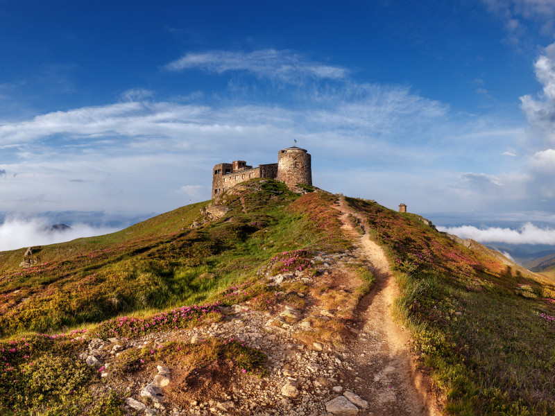
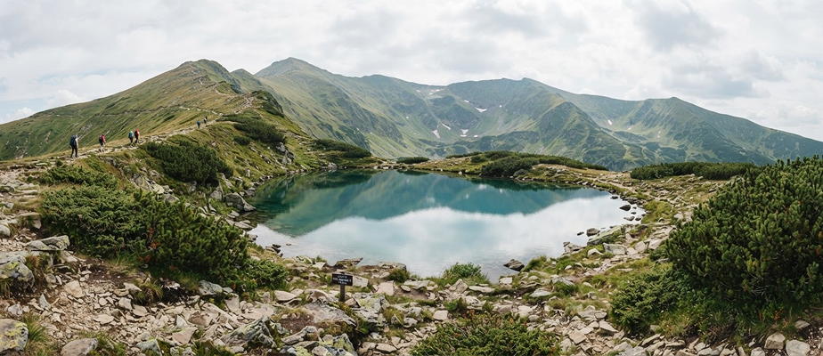
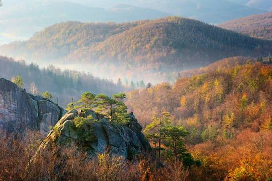
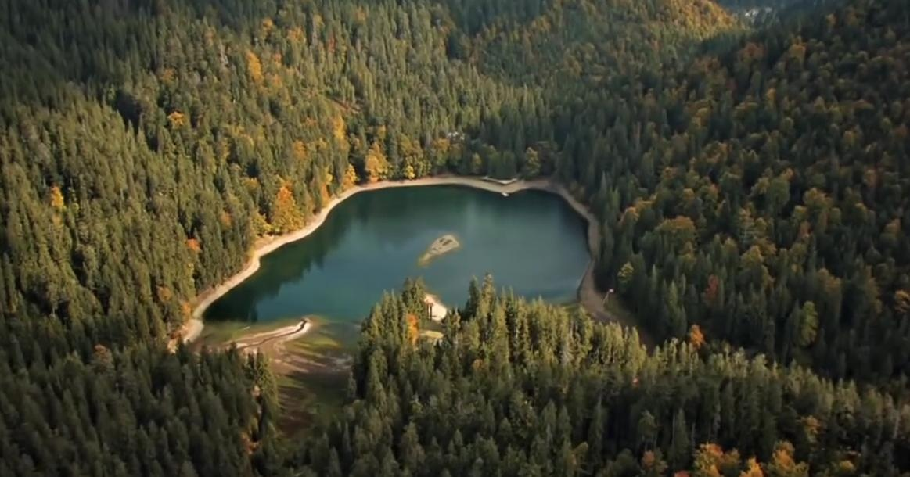
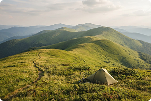
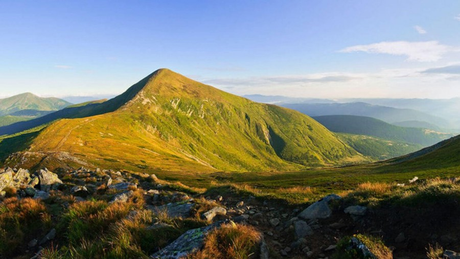

Похід на Піп Іван та Чорногірський хребет
3 дні • 32 км • Складний
Eco-Impact 9.4
Обрати маршрут Похід на Піп Іван та Чорногірський хребетПіші походи без джипінгу, з прозорим розрахунком вартості та Eco-Impact оцінкою
Показано 6 із 6 маршрутів

3 дні • 32 км • Складний
Eco-Impact 9.4
Обрати маршрут Похід на Піп Іван та Чорногірський хребет
1 день • 14 км • Середній
Eco-Impact 9.1
від 1 800 грн
Детальніше про маршрут Озеро Несамовите
1 день • 6 км • Середній
Eco-Impact 9.2
від 1 300 грн
Детальніше про маршрут Скелі Довбуша
1 день • 10 км • Легкий
Eco-Impact 9.0
від 1 600 грн
Детальніше про маршрут Лісовими стежками до Синевиру
2 дні • 24 км • Середній
Eco-Impact 9.4
від 2 100 грн
Детальніше про маршрут Полонини Боржави з наметами
1 день • 12 км • Складний
Eco-Impact 9.3
від 1 900 грн
Детальніше про маршрут Сходження на ГоверлуКарта наближена до околиць Ворохти й Чорногори в Україні, без сусідніх країн у початковому огляді. Інші локації та точки старту зазначені на сторінках маршрутів.
Скористайтеся онлайн-калькулятором для вибору дат, гідів та спорядження без дзвінків менеджеру